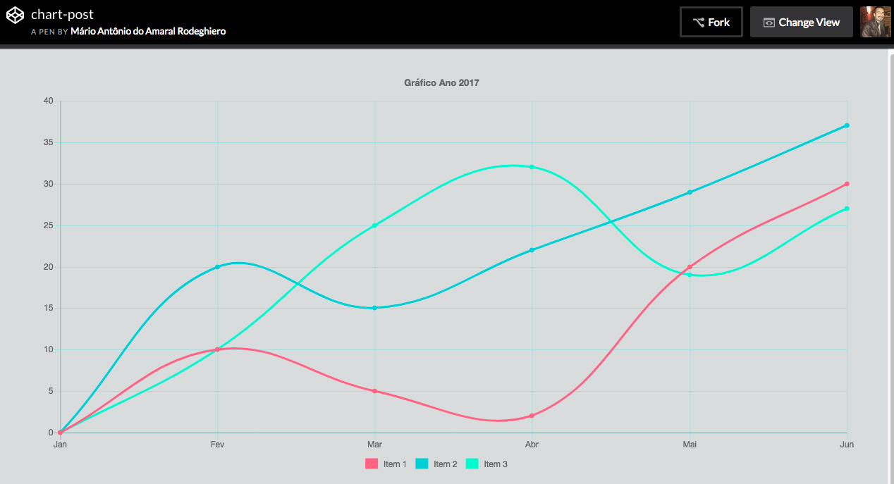

Autor: MárioRodeghiero
Autor: MárioRodeghiero
Date: 12/12/2017
Gráficos com chartjs
"Construindo gráficos com chart.js"
ChartJs é uma biblioteca de WebGraphics baseado em canvas, podendo realizar manipulação dos dados através de javascript, para tornar o desenvolvimento de gráficos, mais rápido e pratico. Com este framework, você ainda gera gráficos responsivos e pode personalizar de acordo com sua necessidade, pois ele possui vários tipos diferentes de gráficos.
Código HTML
Como este é um simples exemplo para abordar apenas algumas, das varias configurações disponíveis no Chartjs, nosso código HTML vai apresentar uma tag script com um source para buscar a lib e uma simples Tag "canvas" com id="myChart". E no final do nosso HTML, especificamos o caminho do nosso arquivo "chart.js".
<html>
<head>
<script src="https://cdnjs.cloudflare.com/ajax/libs/Chart.js/2.4.0/Chart.min.js"></script>
</head>
<body>
<canvas id="myChart"> </canvas>
<script src="js/chart.js"><script>
</body>
</html>
Criando o código javascript
Primeiramente vamos adicionar um codigo meio que padrão e para dar inicio, vamos
criar uma variável chamada
"ctx" para armazenar nesta variável o elemento que possui o
id="myChart". Logo em seguida vamos criar uma variável chamada
myChart
e passamos a palavra
new com nome
Chart para criarmos um novo objeto, passando a variável
"ctx".
var ctx = document.getElementById("myChart");
var myChart = new Chart(ctx, {
});
Dentro do nosso código padrão, existe 3 tipos de configurações que o Chartjs nos proporciona:
Type
Em type configuramos o tipo de gráfico que desejamos ( line, bar, radar, pie, polarArea, bubble, scatter ) em nosso exemplo vamos usar o tipo de gráfico em linha, mas você pode consultar o site do Chartjs para mais informações.
var ctx = document.getElementById("myChart");
var myChart = new Chart(ctx, {
type: 'line'
});
Data
Em Data, nos vamos informar os dados para plotar em nosso gráfico. Primeiramente vamos informar os labels, no nosso caso vai ser apresentado alguns meses do ano, que é referenciado por um array, conforme o código abaixo. Na sequência inserimos uma vírgula e passamos os datasets para informar os dados a serem inseridos, podendo realizar algumas configurações de estilização, não entrarei em detalhes sobre estilização, pois esta disponível na documentação, mas no exemplo, já contém uma previa do que é possível estilizar.
var ctx = document.getElementById("myChart");
var myChart = new Chart(ctx, {
type: 'line',
data: {
labels: ["Jan", "Fev", "Mar", "Abr"],
datasets: [{
label: " Item 1 ",
borderColor: '#ff6384',
backgroundColor: '#ff6384',
fill: false,
data: [0, 10, 5, 2, 20],
},
{
label: " Item 2 ",
borderColor: '#00cfd6',
backgroundColor: '#00cfd6',
fill: false,
data: [0, 20, 15, 22, 29],
},
{
label: " Item 3 ",
borderColor: '#24f9cb',
backgroundColor: '#24f9cb',
fill: false,
data: [0, 10, 25, 32, 19],
}],
}
});
Options
Em options, realizamos as configurações globais do nosso gráfico, então logo após o fechamento da chaves do tipo "data", vamos inserir uma vírgula e passar o "options". Dentro dele é possível realizar diversos tipos de configurações, vou informar e demonstrar no código abaixo, apenas algumas delas, mas também esta disponível na documentação do Chartjs.
var ctx = document.getElementById("myChart");
var myChart = new Chart(ctx, {
type: 'line',
data: {
labels: ["Jan", "Fev", "Mar", "Abr"],
datasets: [{
label: " Item 1 ",
borderColor: '#ff6384',
backgroundColor: '#ff6384',
fill: false,
data: [0, 10, 5, 2, 20],
},
{
label: " Item 2 ",
borderColor: '#00cfd6',
backgroundColor: '#00cfd6',
fill: false,
data: [0, 20, 15, 22, 29],
},
{
label: " Item 3 ",
borderColor: '#24f9cb',
backgroundColor: '#24f9cb',
fill: false,
data: [0, 10, 25, 32, 19],
}]
},
options: {
layout: {
padding: {
left: 50,
right: 50,
top: 20,
bottom: 20
}
},
title: {
display: true,
text: 'Ano 2017',
fontSize: 13,
padding: 20
},
legend: {
position: 'bottom',
labels:{
boxWidth: 15
},
},
animation:{
easing: 'easeOutBack',
},
scales: {
yAxes: [{
gridLines: {
display: true,
color:"#62e0e466"
}
}],
xAxes: [{
gridLines: {
display: true,
color:"#62e0e466"
}
}],
}
}
});
Exemplo do Código funcionando

Esse foi um post para apresentar um pouco mais sobre chartjs ♥️, esta lib open source fantástica. Agora é só colocar a criatividade
em prática e brincar com as milhares de configurações possíveis no Chartjs. Caso tenha deixado passar despercebido
algum erro, o código esta disponivel também no meu
codepen.io.
Thanks!!